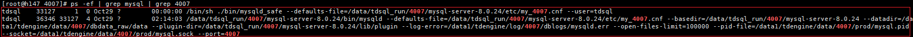
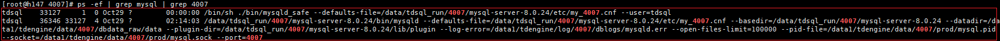

操作步骤
- 使用PuTTY工具通过root用户登录TDSQL数据节点。
- 执行以下命令，查询是否已安装mysql服务。
ps -ef | grep mysql | grep 实例端口

命令中的实例端口请根据赤兔管理台“实例管理”界面选择对应的实例后，进入“DB监控”界面获取到的实际值替换。
示例：
ps -ef | grep mysql | grep 4007
当回显类似如下信息时，则表示已安装了mysql服务。否则，表示未安装mysql服务。

ps -ef | grep mysql | grep 实例端口
命令中的实例端口请根据赤兔管理台“实例管理”界面选择对应的实例后，进入“DB监控”界面获取到的实际值替换。
示例：
ps -ef | grep mysql | grep 4007
当回显类似如下信息时，则表示已安装了mysql服务。否则，表示未安装mysql服务。
